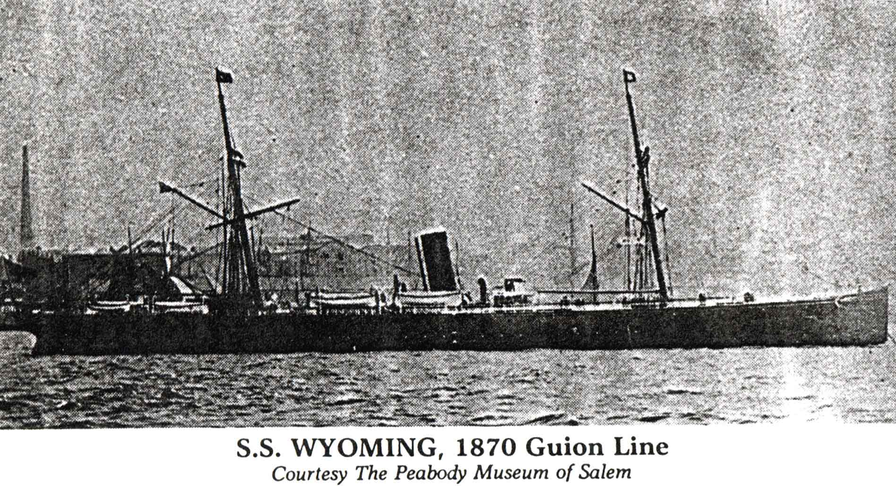

According to the ship's passenger list, John Rudge migrated to America on 23 Aug 1851 from the port of Liverpool on board the S.S. Wyoming. Here's a photograph of the S.S. Wyoming, taken ca. 1870. (This photograph has been taken from Anuta, M. (1993) Ships of Our Ancestors. Genealogical Publishing Co.).
Last updated on 27 Feb 2001